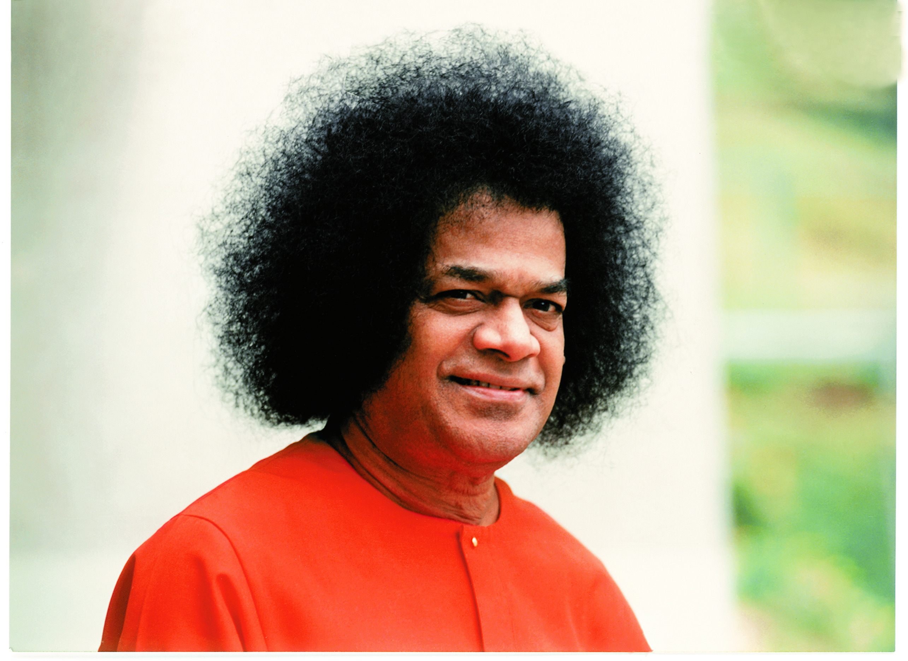
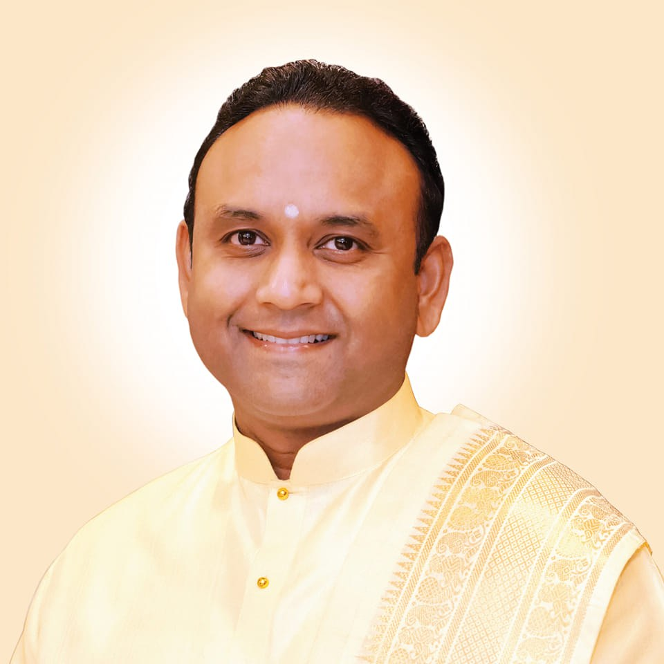
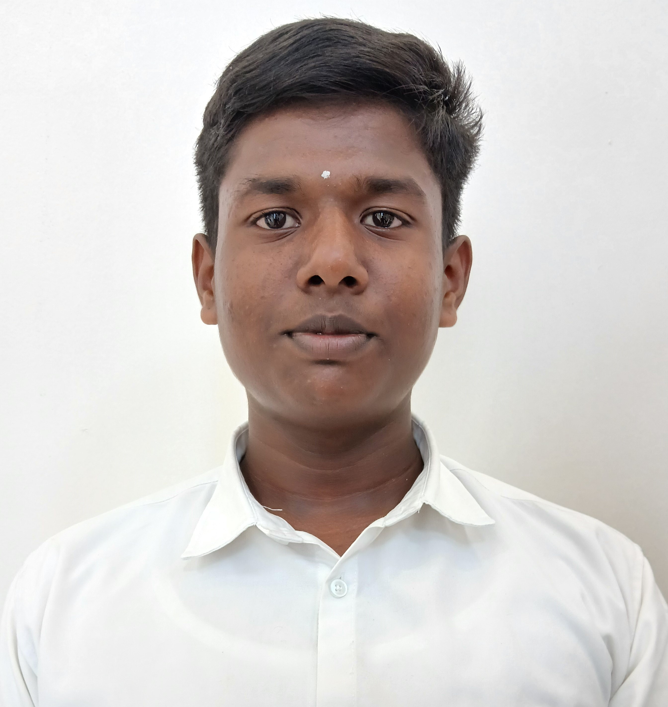
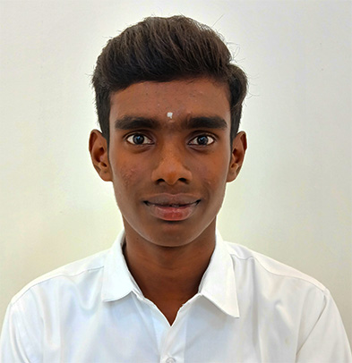
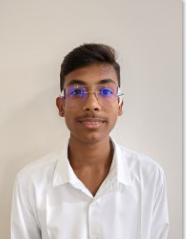

Meet Sanchari Mithra – your friendly digital companion at our campus!
🤖 A blend of wisdom and tech, Sanchari Mithra is more than just a chatbot.
🏫 From academics to hostel life, he knows every corner of Gurukulam.
📚 Need help with subjects, schedules, or staff? Just ask him!
🛏️ Wondering about hostel routines or activities? He’s got you covered.
🕉️ Rooted in Parāvidyā and Aparāvidyā, he blends values with learning.
🧭 Think of him as your guide, assistant, and campus buddy in one.
✨ Start a chat and let Sanchari Mithra walk you through a holistic journey!
📞 Have any doubts or queries? Call us at
+91 70226 61771

Sri Sathya Sai Sharadaniketanam, Mandya, is a boys' residential campus established under the divine guidance of Sadguru Sri Madhusudan Sai. It offers completely free, values-based education from Grade 6 to Grade 12 under the NIOS curriculum. The campus nurtures students in a holistic environment that integrates academic excellence with spiritual and moral development.

Sri Gaurav M. serves as the Pradhanapalak and Chairman of Sri Sathya Sai Sharadaniketanam, Mandya. Under the divine guidance of Sadguru Sri Madhusudan Sai, he oversees all residential, academic, and spiritual responsibilities of the Gurukulam. With loving discipline and selfless commitment, he nurtures each student like a father, ensuring their all-round development. His leadership fosters a value-based environment rooted in seva (service), sadhana (spiritual practice), and samskara (values). Through his tireless efforts, the institution has become a model of holistic education—shaping young minds into noble, selfless, and service-oriented individuals dedicated to the betterment of society.
 +91 93800 87929
+91 93800 87929
Sri Sathya Sai Sharadaniketanam, Mandya:
Visit on Google Maps
👨🏫 Mentor & Guide

💻 Student Developer

🧠 Student Researcher

🎨 UI/UX Student Designer